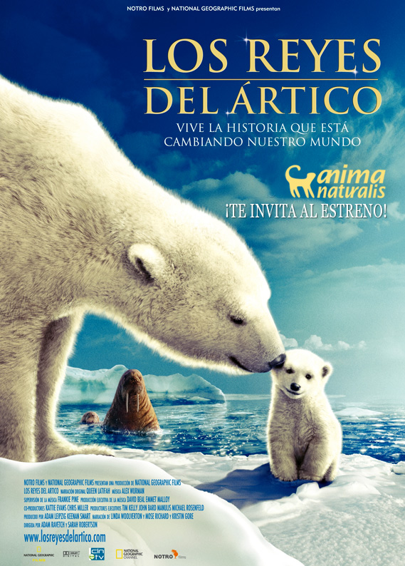

Documental
 es la expresión de un aspecto de la realidad, mostrada en forma audiovisual. La organización y estructura de imágenes y sonidos (textos y entrevistas), según el punto de vista del autor, determina el tipo de documental.
Historia del documental
- 1899, varios inventores estaban en la carrera por desarrollar nuevos aparatos para capturar el movimiento a partir de fotografías, entre los cuales se encontraban el estadounidense Thomas Alva Edison y los franceses hermanos Lumière.
- Estas diferentes técnicas ofrecieron la posibilidad de transportar fácilmente el cinematógrafo a cualquier parte, pudiendo retratar la realidad del mundo exterior.
- Su personal se encargó de capturar filmes de un solo plano, llamados "películas de actualidad", donde se retrataban momentos tales como la llegada de botes a un puerto, la aproximación de un tren, gente trabajando, etc.
- nacimiento del cine estuvo marcada por la moda de mostrar un evento en cortos lapsos, debido principalmente a que las cámaras solo podían contener pequeñas cantidades de filme
- cine se llamó más adelante cine documento porque si era cierto que mostraba imágenes de la realidad, no mostraba un punto de vista claro de ella ni intentaba formar una opinión propia